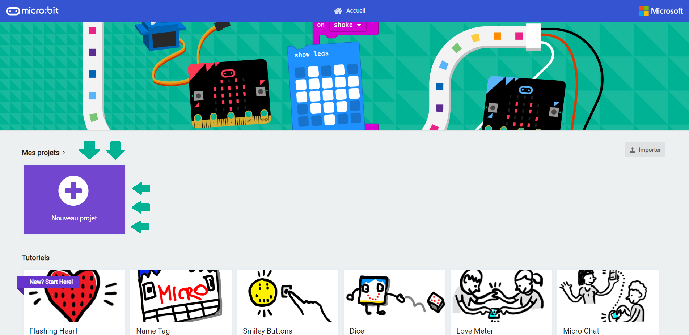
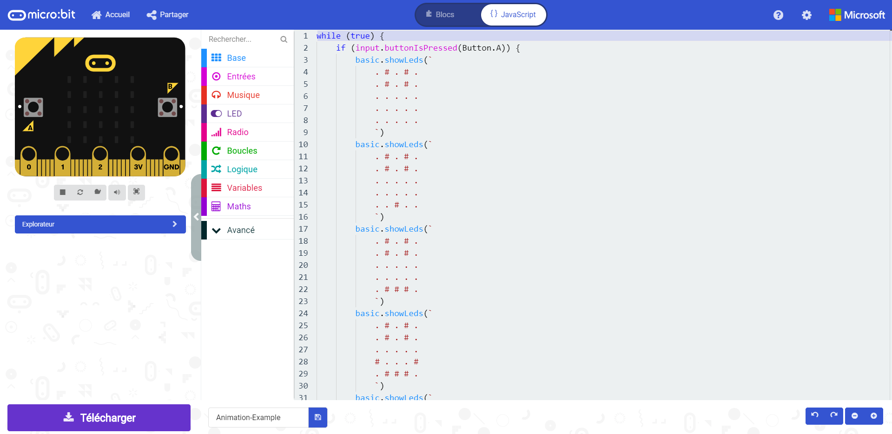

Bienvenue!
Bienvenue!
Connecte-
toi
Wi-Fi : réseau Wi-Fi
Mot de passe : mot de passe du Wi-Fi
Intro au matériel informatique
avec micro:bit
https://makecode.microbit.org/#

Programmons en JavaScript!
